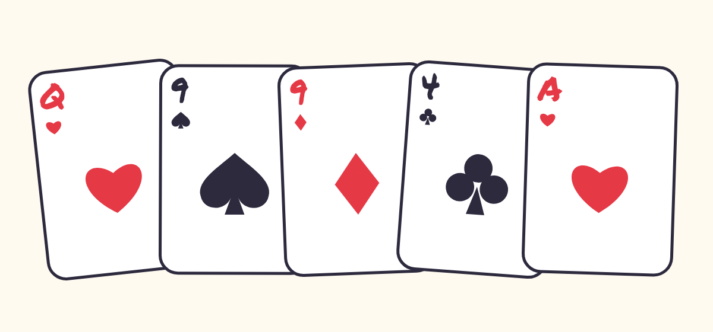
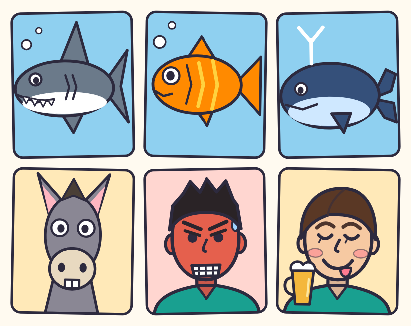
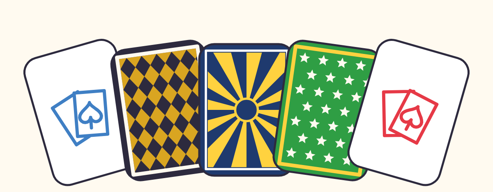
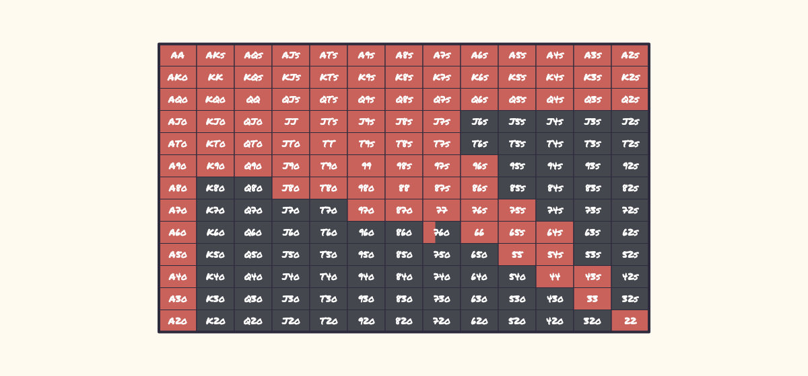

What it does
Doodle Poker is a notebook for live No Limit Hold’em. Here is what is in it today, in groups. A few things need an internet connection and your own Claude key; they are marked, and the rest works with no signal.

Recording hands
Record a hand as it happens, or write it down afterwards. The app works out the pot, the side pots and who won.
- Tap through a hand on a drawn table: 2 to 10 players, positions, stacks, cards, and every fold, check, call, bet, raise and all-in. Antes, straddles and rake are covered.
- Replay a saved hand step by step, forward and back.
- Quick Hand: type a hand in your own shorthand with a keyboard made for it. Typing and saving work with no signal.
- Search and filter your hands by cards, name, tag or note. Mark a hand “To review”.
- Keep photos with a hand, and doodle on them. Paste in a hand history in the PokerStars layout.
- Share a hand as text or as a picture. Export hands as a spreadsheet (CSV) or as text hand histories.
- Optional: with your own Claude key, have a hand reviewed, fix a hand by describing the change, or build a hand from a photo of the table. Without a key you can copy the hand to any AI app you like.

Sessions, places and games
Sit down, play, cash out. The app keeps the time, the money and the breaks.
- Start a session with a place, a game, a currency and a buy-in. It can be a cash game or a tournament (buy-in, fee and starting chips).
- Top up, set your stack, take chips off, cash out, and go on a break. A quick money button on the Home screen does it from anywhere.
- Plan a session ahead and add it to your phone’s calendar. Home shows the next one and counts down to it.
- Waiting for a seat: note when you arrive, sit down later, and the app keeps the wait. Averages by place and by weekday are in your stats. A place can hold the number to ring or text to join the queue.
- Reminders for breaks, stack updates and your own missions. You choose which are on in Settings.
- Notes, tags and star ratings for each session, and a Spot check to mark a hand to look at later.
- Places (casinos, card rooms, home games) with their games, blinds, currency and time zone. A bucket list of places and games you want to try.
- A Table tab for who is sitting where, who has left, and who has a drink.

People
Keep a page on everyone you play with, with a drawn face so you remember who is who.
- Draw a face from parts (hair, eyes, glasses, hats and more), or describe the person in words and let the app build the face.
- Give each person a type: TAG, nit, fish and so on, or your own. Add notes, with alert categories for the things you must not forget.
- Star ratings for how someone plays.
- Spells: mark when someone is on tilt, drunk or tired, with a timer.
- Links between players (friends, for example), and a list of funny things said at the table.
- Share a person’s “passport” as a picture. Keep a page on yourself too.

The Doodle Book
An endless scrapbook for your poker. Stick in hands, photos and notes, and draw all over them.
- Pages with pens, a spray can, text on sticky notes, photos, stamps and scissors. Undo whenever you slip.
- Put the picture of a hand on a page.
- Doodle Vault: every doodle you have made anywhere in the app, in one place, searchable by words and dates.
- Design your own table felts and card backs.
- The Book and the Vault are included in your backups.

Study tools
Practise away from the table. These all work with no signal.
- Poker Ranges: raise, call and fold grids for each position that you can edit and copy. They start from the app’s own ranges.
- Range Game: hands come up and you tap fold, call or raise. The ones you miss come back more often.
- Equity Game: guess your chance of winning, then see it.
- Play Poker: No Limit Hold’em against computer players, for play money only. Nothing real is at stake.
- A list of your own abbreviations for the shorthand you type.
Money and stats
See how you are really doing, in your own numbers.
- A bankroll graph, and a calendar heat map of the days you won and lost.
- My stats: ready-made questions about your own play, such as how you do by day of the week, and your own questions to add.
- Records: streaks, best and worst, lifetime totals, how long you wait for a seat, and a fortune teller that is just for fun.
- My year: a review of the year you can share as a picture, with or without the amounts.
- Goals for hours, sessions or profit, shown on Home.
- Expenses with receipt photos, trips, and a tax report as a PDF.
- A home currency, so everything adds up in one currency. Exchange rates are found for you, or you can type them.
Your data
It is yours. It stays on your phone, and you decide what leaves it.
- Backup and restore: save everything to one file (
.doodle-poker), keep it wherever you like, and restore from it on this phone or a new one. The app reminds you when it has been a while. - The Bin keeps deleted things for 30 days, and Undo is there right after you delete.
- Export hands, sessions and expenses as spreadsheets or text; expenses, trips and the tax report as PDF.
- Import: choose spreadsheets, PDFs, pictures or text files and let Claude read them (needs your own key); you tick what to bring in, and can undo the import.
- Lock the app with your fingerprint, face or screen lock. Hide the screen when you leave the app. Hide amounts and your hole cards at the table.
- Find a feature: a search that takes you to any setting or page.